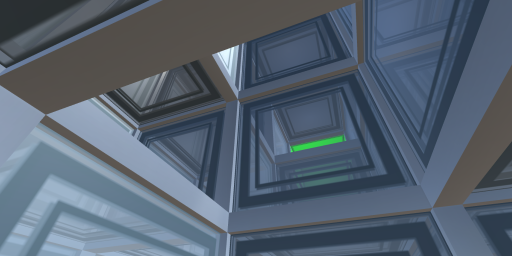

Astura Phoenix


I am an eternal contradiction that will inevitably end badly.
Current project
Executable Neural Graph - A prototype exploring a fully extensible scripting language built into a simplified spiking neural network, with the goal of strong natural language understanding.
Web apps
